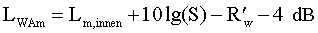
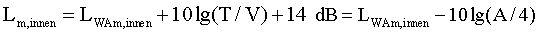
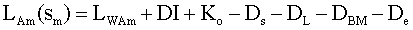

und LAm,i , Kl,i und KT,i die Mittelungspegel und Zuschläge für Impulshaltigkeit und/oder auffällige Pegeländerungen oder der Abschlag nach Nr. 1.3.3 sowie der Zuschlag für Ton- und Informationshaltigkeit nach Nr. 1.3.4 während der zugehörigen Teilzeiten Ti .
Im Falle von Nr. 1.3.2.2 Satz 2 beträgt Tr = 4 Stunden.
Zur Bestimmung der Beurteilungszeit Tr im Falle von § 5 Abs. 3 sind die Beurteilungszeiten nach Buchstaben a, b oder c um die außer Betracht zu lassenden Teilzeiten Ti nach Nr. 1.3.2.3 (tatsächliche Nutzungszeit) zu kürzen.
- 1.4
Ständig vorherrschende Fremdgeräusche
Fremdgeräusche sind Geräusche am Immissionsort, die unabhängig von dem Geräusch der zu beurteilenden Anlage oder Anlagen auftreten.
Sie sind dann als ständig vorherrschend anzusehen, wenn der Mittelungspegel des Anlagengeräusches gegebenenfalls zuzüglich der Zuschläge für Impulshaltigkeit und/oder auffällige Pegeländerungen in mehr als 95% der Nutzungszeit vom Fremdgeräusch übertroffen wird.
- 1.5
Seltene Ereignisse
Überschreitungen der Immissionsrichtwerte gelten als selten, wenn sie an höchstens 18 Kalendertagen eines Jahres in einer Beurteilungszeit oder mehreren Beurteilungszeiten auftreten. Dies gilt unabhängig von der Zahl der einwirkenden Sportanlagen.
- 1.6
Vergleich des Beurteilungspegels mit dem Immissionsrichtwert
Der durch Prognose nach Nr. 2 ermittelte Beurteilungspegel nach Nr. 1.3.5 ist direkt mit den Immissionsrichtwerten nach § 2 der Verordnung zu vergleichen.
Wird der Beurteilungspegel durch Messung nach Nr. 3 ermittelt, ist zum Vergleich mit den Immissionsrichtwerten nach § 2 der Verordnung der um 3 dB(A) verminderte Beurteilungspegel nach Nr. 1.3.5 heranzuziehen.
- 2.
Ermittlung der Geräuschimmission durch Prognose
- 2.1.
Grundlagen
Der Mittelungspegel LAm ist in Anlehnung an VDI-Richtlinie 2714 "Schallausbreitung im Freien" (Januar 1988) und Entwurf VDI-Richtlinie 2720/1 "Schallschutz durch Abschirmung im Freien" (November 1987) zu berechnen.
Für die Berechnung der Mittelungspegel werden für alle Schallquellen die mittleren Schalleistungspegel LWAm, die Einwirkzeiten , die Raumwinkelmaße, gegebenenfalls die Richtwirkungsmaße, die Koordinaten der Schallquellen und der Immissionsorte, die Lage und Abmessungen von Hindernissen und außerdem für schallabstrahlende Außenbauteile von Gebäuden die Flächen S und die bewerteten Bauschalldämm-Maße R'w benötigt.
Als Eingangsdaten für die Berechnung können Meßwerte oder Erfahrungswerte, soweit sie auf den Meßvorschriften dieses Anhangs beruhen, verwendet werden. Wenn aufgrund besonderer Vorkehrungen eine im Vergleich zu den Erfahrungswerten weitergehende dauerhafte Lärmminderung nachgewiesen ist, können die der Lärmminderung entsprechenden Korrekturwerte bei den Eingangsdaten berücksichtigt werden.
Der Mittelungspegel der Geräusche, die von den der Anlage zuzurechnenden Parkflächen ausgehen, ist zu berechnen nach den Richtlinien für den Lärmschutz an Straßen - Ausgabe 1990 - RLS-90, bekanntgemacht im Verkehrsblatt, Amtsblatt des Bundesministers für Verkehr der Bundesrepublik Deutschland (VkBl.) Nr. 7 vom 14. April 1990 unter lfd. Nr. 79. Bei der Bestimmung der Anzahl der Fahrzeugbewegungen je Stellplatz und Stunde ist, sofern keine genaueren Zahlen vorliegen, von bei vergleichbaren Anlagen gewonnenen Erfahrungswerten auszugehen. Die Richtlinien sind zu beziehen von der Forschungsgesellschaft für Straßen- und Verkehrswesen, Alfred-Schütte-Allee 10, 5000 Köln 21.
Der Beurteilungspegel für den Verkehr auf öffentlichen Verkehrsflächen ist zu berechnen nach den Richtlinien für den Lärmschutz an Straßen - Ausgabe 1990 - RLS-90, bekanntgemacht im Verkehrsblatt, Amtsblatt des Bundesministers für Verkehr der Bundesrepublik Deutschland (VkBl.) Nr. 7 vom 14. April 1990 unter lfd. Nr. 79. Die Richtlinien sind zu beziehen von der Forschungsgesellschaft für Straßen- und Verkehrswesen, Alfred-Schütte-Allee 10, 5000 Köln 21.
- 2.2
Von Teilflächen der Außenhaut eines Gebäudes abgestrahlte Schalleistungen
Wenn sich Schallquellen in einem Gebäude befinden, ist jedes Außenhautelement des Gebäudes als eine Schallquelle zu betrachten. Der durch ein Außenhautelement ins Freie abgestrahlte Schalleistungspegel LWAm ist aus dem mittleren Innenpegel Lm,innen im Raum, den es nach außen abschließt, in ca. 1 m Abstand von dem Element, aus seiner Fläche S (in m2) und aus seinem bewerteten Bauschalldämm-Maß R'w nach der Gleichung
 (4)
zu berechnen. Für den mittleren Innenpegel kann von Meß- oder Erfahrungswerten ausgegangen werden. Er kann für einen Raum aus dem Schalleistungspegel LWAm,innen aller Schallquellen im Raum zusammen nach der Gleichung
 (5)
berechnet werden, worin T die Nachhallzeit (in s) bei mittleren Frequenzen, V das Volumen (in cbm) und A die äquivalente Absorptionsfläche des Raumes (in qm) bei mittleren Frequenzen ist.
Für Öffnungen ist das bewertete Bauschalldämm-Maß mit Null anzusetzen.
- 2.3
Schallausbreitungsrechnung
Die Rechnung ist für jede Schallquelle entsprechend VDI-Richtlinie 2714, Abschnitt 3 bis 7, und Entwurf VDI-Richtlinie 2720/1, Abschnitt 3, durchzuführen. Bei den frequenzabhängigen Einflüssen ist von einer Frequenz von 500 Hz auszugehen.
Werden bei der Schallausbreitungsrechnung Abschirmungen berücksichtigt, ist nach Entwurf VDI-Richtlinie 2720/1, Abschnitt 3.1, gegebenenfalls eine feinere Zerlegung in Einzelschallquellen als nach VDI-Richtlinie 2714, Abschnitte 3.3 und 3.4 erforderlich.
Reflexionen, die nicht bereits im Raumwinkelmaß enthalten sind, sind nach VDI-Richtlinie 2714, Abschnitt 7.1, durch die Annahme von Spiegelschallquellen zu berücksichtigen.
Der Mittelungspegel LAm (Sm) von einer Schallquelle an einem Immissionsort im Abstand Sm von ihrem Mittelpunkt ist nach Gleichung (6) zu berechnen:
 (6).
Die Bedeutung der einzelnen Glieder in Gleichung (6) ist Tabelle 1 zu entnehmen.
Die Eigenabschirmung von Gebäuden ist in Anlehnung an VDI-Richtlinie 2714, Abschnitt 5.1, durch das Richtwirkungsmaß zu berücksichtigen. Mit DI ≤ -10 dB für die dem Immissionsort abgewandte Seite darf jedoch nur gerechnet werden, wenn sich ihr gegenüber keine reflektierenden Flächen (z.B. Wände von Gebäuden) befinden.
Das Boden- und Meteorologie- Dämpfungsmaß DBM ist nach VDI-Richtlinie 2714, Abschnitt 6.3, Gleichung (7), anzusetzen.
Die Einfügungsdämpfungsmaße De von Abschirmungen sind nach Entwurf VDI-Richtlinie 2720/1, Abschnitt 3, zu berechnen. Dabei ist in Gleichung (5) dieser Richtlinie C(tief)2 = 20 zu setzen. Der Korrekturfaktor für Witterungseinflüsse ist für alle Anlagen nach Abschnitt 3.4.3, Gleichung (7a), zu berechnen.